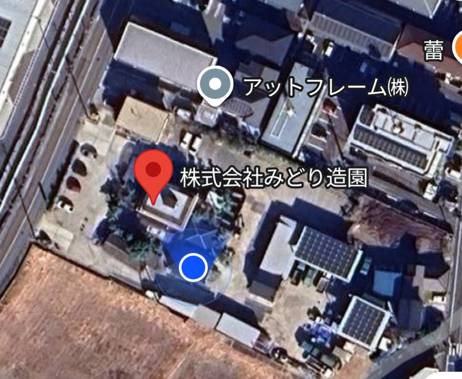

🌲 みどり造園 社内マップ（資材置き場）
番号ピンを押すと写真と場所の名前が出ます／名前は仮です。良い呼び名があれば水野まで！
📷 航空写真に切替
🏷️ 名前ラベル
🖨️ A4印刷
1階・屋外
2階
検索ヒット
道 路
通 り 道
広い道（中型車２台）
自宅へ
通 路
正面入口 → フートンへ
⬅ 北入口
寮
北社員駐車場（拡張）
会長畑
N
自宅駐車場
自宅
アームロール
下の事務所
木材置き場
シャッター庫
トイレ
板木置場
竹置場
コンプレッサー
北側屋根付き駐車場
ハンマー
置き場
佐野さん
作業場
西社員駐車場
看板
農薬庫
工具庫
事務所（2階）
木造2階建て
詰所（1階）
⬅入口
階段(東)
第二更衣室
更衣室
男子
更衣室
フートン
くまで
脚立
タンク
階段
屋根駐車場（２階クレーン）
パッカー置き場
⬅ 正面入口
※おおよその配置イメージ図です（縮尺・建物の形は目安）

※ピンの名前は「（仮）」です。写真をタップすると大きく見られます。「📷航空写真に切替」で実際の空撮とも見比べられます。
📋 場所一覧（
35
か所）
← 前の場所
次の場所 →
閉じる